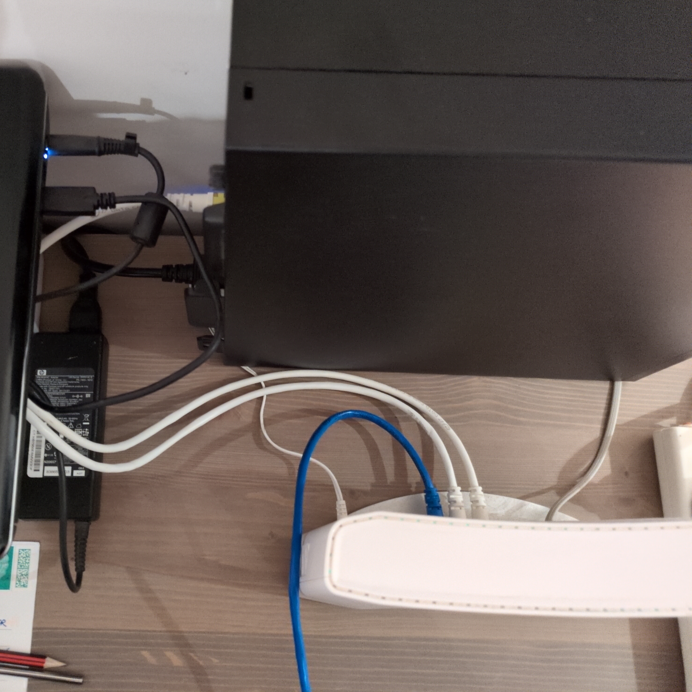
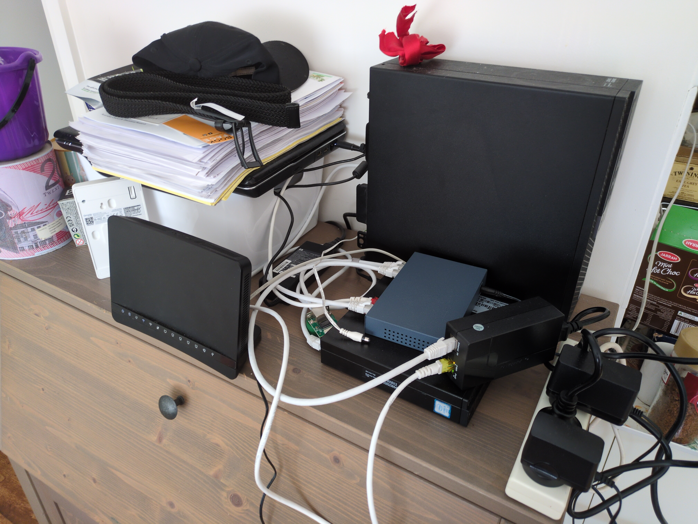
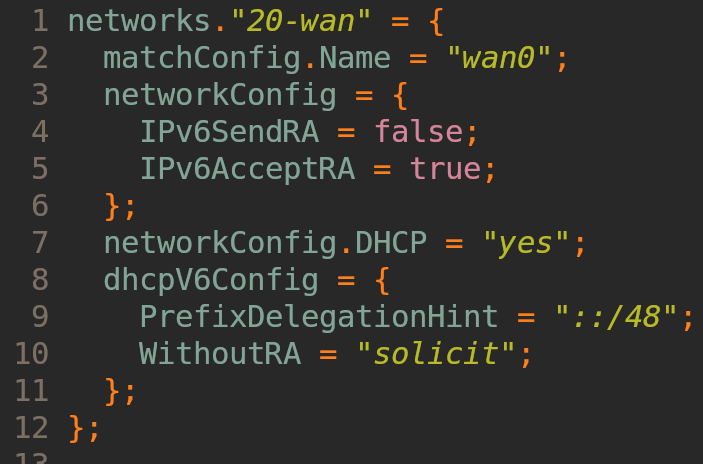

Your home router sucks?
By Liam O’Connor


| Feature | Status |
|---|---|
| DHCPv4, SLAAC, IPv6-PD | ✅ |
| IPv4 NAT w, port forwarding | ✅ |
nftables firewall |
✅ |
| Local split-horizon DNS server | ✅ |
| Remote management | ✅ |
| No cloud dependencies | ✅ |
| Automatic updates | 🟠 |
| QoS | ❌ |
| Ethernet and Wi-Fi improvements | ❌ |
| Item | Qty | Price |
|---|---|---|
| Dell Optiplex | 1 | $165 |
| Ethernet cables | 4 | $4.20 |
| Switch | 1 | $47 |
| Wi-Fi AP | 1 | $111 |
| PoE injector | 1 | $51.95 |
| Total | $391.75 | |
| Subtotal | $339.80 |
nftables and packet flow on Linux
Biggest challenge: IPv6